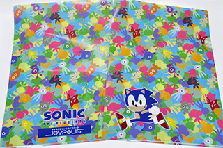

東京ジョイポリスの情報を紹介
2013.11.21
2013年11月24日(日)に開催される『ソニックファン感謝祭2013』にあわせて、東京ジョイポリス限定『ソニック×JOYPOLIS オリジナルクリアファイル(ウィスプ)』が登場します！
このグッズのための描き下ろしデザインです！！
 さらに！！海外グッズも続々登場♪
さらに！！海外グッズも続々登場♪
大好評のステーショナリーのほか、シルバーのぬいぐるみや、これからの季節にピッタリ★ソニックとテイルスのスリッパやイヤーウォーマーも…
数量限定ですのでお早めに！
※無くなり次第終了となります。
| 商品名 | 『ソニック×JOYPOLIS オリジナルクリアファイル(ウィスプ)』 |
|---|---|
| 税込価格 | 315円（税込） |
| 発売場所 | 東京ジョイポリス 1STフロアー「JP STORE」 |